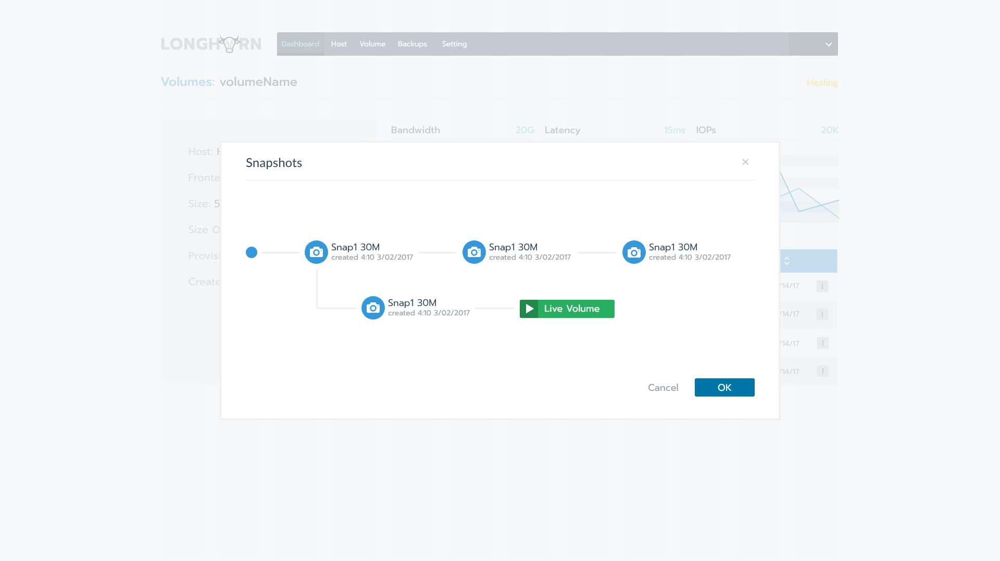

Project Background
To keep up with the growing scale of cloud- and container-based deployments, distributed block storage systems are becoming increasingly sophisticated. The number of volumes a storage controller serves continues to increase. While storage controllers in the early 2000s served no more than a few dozen volumes, modern cloud environments require tens of thousands to millions of distributed block storage volumes. Storage controllers have therefore become highly complex distributed systems. Distributed block storage is inherently simpler than other forms of distributed storage such as file systems. No matter how many volumes the system has, each volume can only be mounted by a single host. Because of this, it is conceivable that we should be able to partition a large block storage controller into a number of smaller storage controllers, as long as those volumes can still be built from a common pool of disks and we have the means to orchestrate the storage controllers so they work together coherently. We created the Longhorn project to push this idea to the limit.
Project Requirements
At a high level, Longhorn allows you to:
1. Pool local disks or network storage **mounted in compute or dedicated storage hosts.
2. **Create block storage volumes for containers and virtual machines. **You can specify the size of the volume, IOPS requirements, and the number of synchronous replicas you want across the hosts that supply the storage resource for the volume. Replicas are thin-provisioned on the underlying disks or network storage.
3. Create a dedicated storage controller for each volume. **This is perhaps the most unique feature of Longhorn compared to most existing distributed storage systems, which are typically built with sophisticated controller software and can serve anywhere from hundreds to millions of volumes. With the one controller per volume approach, Longhorn turns each volume into a microservice..
4. Schedule multiple replicas across multiple compute or storage hosts. Longhorn monitors the health of each replica and performs repairs, rebuilding the replica when necessary.
More information please visit here
Shining point
I designed and implemented the most challenge part - snapshots.
It allows user to create, delete snapshot and easily get to know the relationship between snapshots.